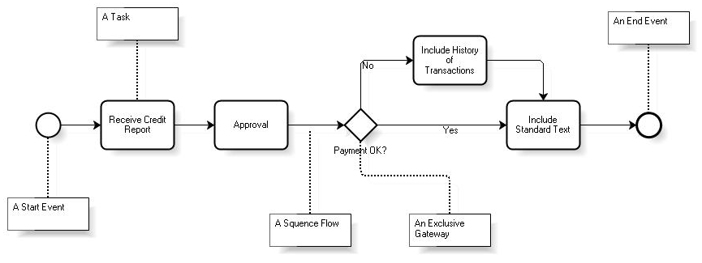

Business Process Modeling Notation or BPMN is a graphical notation standard for modeling business processes in a workflow format. BPMN was initially developed by the Business Process Management Initiative (BPMI) and has been maintained by the Object Management Group since the two organizations merged in 2005. The current version of BPMN is 1.1 and a future version 2.0 has been proposed.
 BPMN’s element categories are as follows:
In general, these categories are made up of different elements. A process flow is represented with flow paths (solid line connector); in addition, the exchange of messages can also be specified (dashed line connector). The following sections will examine the various categories of elements available. For each category, their corresponding elements will be examined and classified into core and advanced elements. References:
Go to the main article - Go to the next section
|
| Backlinks | |
| Toc:GeneXus BPM Suite | Introduction to BPMN |
| Introduction to BPMN - Process Categories |